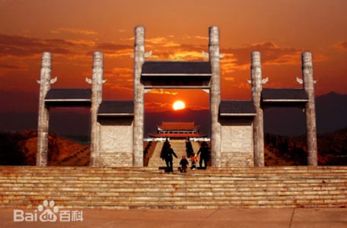
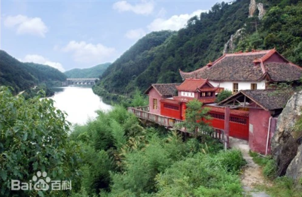

家乡篇
01.基本信息
安仁县，隶属湖南省郴州市 ，位于湖南省东南部，郴州市最北端，东接茶陵县、炎陵县，南邻资兴市、永兴县，西连衡阳市、耒阳市，北接衡东县、攸县，素有“八县通衢”之称，为半山半丘陵地区，地势东南高西北低，属亚热带季风湿润气候，总面积1462.2平方千米。 截至2024年2月，安仁县辖5个镇、8个乡。 截至2023年末，安仁县户籍人口44.68万人，常住人口34.39万人。
唐武德五年（622年），设置安仁镇，属潭州长沙郡衡山县。五代后唐清泰二年（935年），改安仁镇为安仁场，割衡山之宜阳、熊耳二乡为其辖地，隶属衡州衡阳郡。宋乾德三年（965年），升安仁场为安仁县，属荆湖南路衡州衡阳郡。 安仁县是井冈山革命根据地的一部分，被誉为“中国合唱童话县” 。安仁县也是国家首批认定的革命老区县。安仁县水稻生产历代享有盛名，明、清时代已著称衡湘，1989年列为全省商品粮基地之一。有机富硒米、豪峰茶、生态茶油、安仁枳壳、食用菌等绿色农产品畅销全国。 主要景点有大石风景区、大源风景区、义海景区，天源寺、神农殿、万佛寺、老君观、月轮岩、熊峰庵等。
2023年，安仁县地区生产总值（GDP）140.3亿元，比上年增长5.1%。
02.历史沿革
安仁县境，商、周时，为古荆州地。春秋战国时，属楚黔中地。
秦时，属长沙郡湘南县地。
西汉时，属长沙王国，东汉时属长沙郡湘南、酃二县地（酃含今衡阳、衡南、安仁，非今酃县）。（据彭雪开教授《安仁地名源流考》：安仁县域，古为容陵县地；东汉建安二十年（215年），容陵县划属阴山县。）
三国时，属吴之衡阳、湘东二郡之衡山、酃二县地。
晋及南北朝时，属衡阳、湘东二郡之衡山、临蒸（酃县并入）二县地。隋时，属长沙郡衡山、衡阳二县。
唐武德五年（622年），设置安仁镇，属潭州长沙郡衡山县。贞观元年（627年），划属江南道衡州衡阳郡。开元二十一年（733年），改属江南西道衡州衡阳郡。
五代后唐清泰二年（935年），改安仁镇为安仁场，割衡山之宜阳、熊耳二乡为其辖地，隶属衡州衡阳郡。
03.地理环境
位置境域
安仁县位于湖南省东南部，郴州市北部，东接茶陵县、炎陵县、南邻资兴、永兴，西连衡南、耒阳、北接衡东、攸县。地理坐标为东经113°05'至113°36'、北纬26° 17'至26°51'，土地总面积1462.2平方千米。2022年，辖区内耕地面积27.67千公顷，林地面积87.76千公顷，森林覆盖率65.54%。
地形地貌
安仁地处罗霄山脉中段，属半山地半丘陵区。万洋山脉蜿蜒于东南部，五峰仙屹立于西部边境，武功山脉的茶安岭从东北斜贯县境中部，醴攸盆地从北向南、茶安盆地从东向西南横跨其间，形成“三山夹两盆”的地貌格局。整体地势自东南向西北倾斜，永乐江顺地势由东南向西北流贯全境。东南部豪山乡的金紫仙海拔1443米，西北部永乐江下游的渡口乡过家村蔡家屋海拔仅60米。
04.风景名胜
| 简介 | 图片 |
|---|---|
| 神农殿座落在安仁县城关镇东郊村凤凰山脚下。景区占地面积145亩，建筑面积5240平方米。 |

|
| 渡口丹霞位于距离安仁县城15公里的渡口乡，蜿蜒的永乐江纵贯全境。 |
|
| 湖南熊峰山国家森林公园位于罗霄山脉余脉的安仁县城东南部，规划总面积6161.0公顷。 |

|